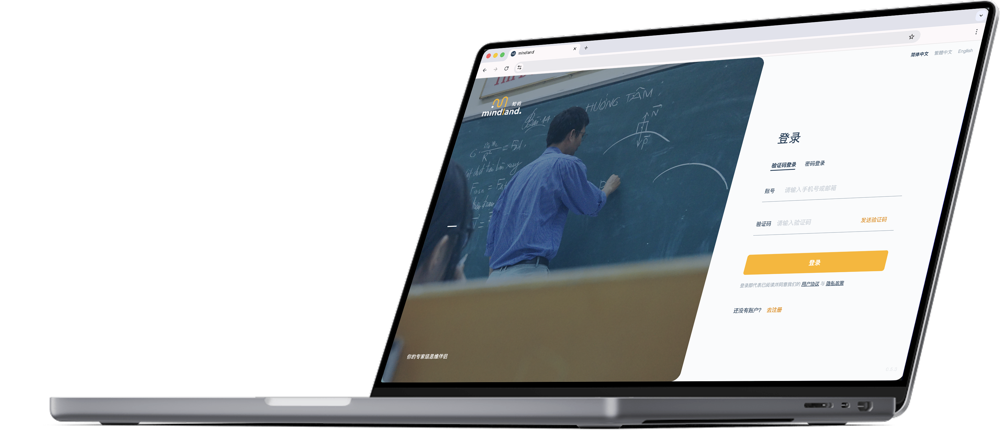
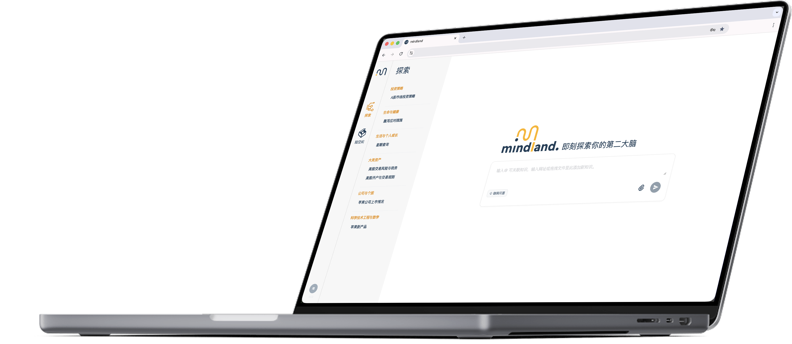

超越搜索 超越对话 你的专家级思维伴侣
立即开始专为专家打造的
AI思维伴侣与思考工作台
通过深度对话激发你的灵感，深入你的研究基底，在庞杂文献资料中自动执行交叉分析与洞察挖掘，主动为你发现知识盲区与创新机会。



苏格拉底式的专家伴侣
超越简单问答，通过深度追问、挑战假设和思维引导，主动激发你的创新灵感。将用户从"信息苦力"提升为"思考战略家"，让价值创造时间突破80%。
从"迷雾"到"明察"
专为处理百万级Token的专业文献而生。能同时支持你在全局知识库中进行精准交叉引用、对比和矛盾发现，让埋藏在角落的致命洞察无所遁形，为决策提供前所未有的全局视野。


无缝的知识工作流平台
在一个工作台上完成从阅读、对话、笔记到创作的全过程。打破应用的壁垒，为你构建一个无缝的思考环境，守护你最宝贵的"心流"状态，让灵感自然生长成为果实。
专注于服务知识工作者
Mindland为深度研究与高精度决策者而生。
在研发、投资分析、政策制定等高价值领域，你的决策成本极高，容错空间极小。
我们深知你持续追踪海量学术论文、财务报告与法律文书的压力，也理解低效信息处理带来的巨大隐性损失。